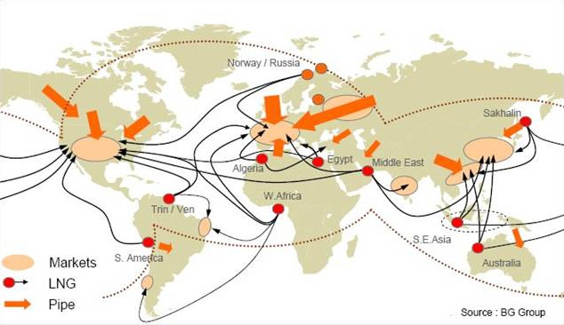

О компании
Заголовок H2
Данная технология подытоживает материал, ранее опубликованный автором в 4 предыдущих номерах журнала «Энергоаудит», и касающейся перехода экономики с 3 ресурсозатратного технологического уклада на 4-й ресурсосберегающий уклад и выше. В основе единой технологии лежат прорывные изобретения технологий калибровки систем приборного учета на потоке и 37-летний опыт разработки конструкторских программ на сборку и испытание (компоновки и доводки) систем измерения и сбережения энергоресурсов в авиамоторостроении, ТЭК и ЖКХ.
Чтобы еще раз подчеркнуть эту мысль, с которой наверняка многие не согласятся, отмечу, что существуют конструкторские проблемы дренажа, баков, чистоты метана 99%, механических примесей в газопроводах, кристаллизации углекислого газа, перевода транспорта на газовый или газодизельный режимы, испарения, топливоподачи, заправки, гибких трубопроводов и множество других по полной программе конструирования и доводки, которые при их незнании выплывают в процессе испытаний и эксплуатации.
Более того, имеются проблемы с качеством принимаемых законов. Как когда-то заметил сатирик Марк Твен в книге «Янки … при дворе короля Артура», страна «без твердых законов, защищающих права изобретателей, подобна раку, который может двигаться только вбок или назад» [2]. Так статьей 1362 ГК РФ фактический срок исключительных прав на изобретения сокращен с 20 лет до примерно 5 лет, а реализовать свои права в течение этого срока у нас невозможно. Урезание срока производится через суд.
Целью ЕТЭС является смена 3-го затратного технологического уклада, повторим, пройденного развитыми странами в 70-е годы, на 4-й уклад. С помощью ЕТЭС инструментально точно определяется, кто конкретно по компетентности конструирует систему и отвечает за конечный результат, который может быть либо в виде прорыва, либо в виде отката.
Чтобы еще раз подчеркнуть эту мысль, с которой наверняка многие не согласятся, отмечу, что существуют конструкторские проблемы дренажа, баков, чистоты метана 99%, механических примесей в газопроводах.
Заголовок H3
Когда я пишу о прорывных изобретениях, я также имею в виду что замена топлива – это весьма вероятный инновационный прорыв, требующий конструкторского интеллекта и преодоления рисков, как в случае с Ту-155 и Ту-156. Как это делается по единой технологии калибровки и конструирования систем, рассмотрим ниже.
«Единая технология» калибровки и конструирования систем энергосбережения (ЕТЭС – простейшее из сокращений сочетания букв) [3] (здесь и в следующих ссылках дана необходимая информация) соответствует главе 77 части 4 ГК РФ. Эта глава толкует понятие единой технологии по смыслу как выраженный в объективной форме результат научно-технической деятельности, который включает в том или ином сочетании изобретения, другие виды интеллектуальной деятельности, подлежащие правовой охране, и может служить технологической основой практической деятельности.
- Занимайся совершенствованием энергетического хозяйства только в том случае, когда эта работа может дать, в конечном счете, существенный экономический либо экологический эффект.
- Определи, какие потери эксергии в данном объекте могут быть устранены.
- Избегай использования как очень малых, так и очень больших разностей температур.
- Старайся свести к минимуму, а еще лучше исключить смешение потоков с разными температурами, давлениями или (и) концентрациями.
- По возможности используй противоточные, а не прямоточные процессы, как при теплопередаче, так и массопередаче и химических реакциях. При противотоке потери эксергии всегда меньше.

Глобальная торговля газом – постепенное развитие: рынки (markets) – жидкий метан (LNG)
– труба (pipe).
Заголовок H4
- Осмотра мест «учета» на трубах с пресечением, как минимум, отсутствия пломб на фильтрах, задвижках и интерфейсных разъемах [5] (или Энергоаудит, 2007, № 1) и [6] (или Новости теплоснабжения, 2001, № 5).
- Дополнения бюджетных конкурсов этапом разработки конструкторских программ на сборку и испытание систем [7] (или Энергоаудит, 2007, № 3).
- Выполнения регламента «Требования к калибровке и испытаниям систем приборного учета текучих сред и тепловой энергии на трубопроводах» [8] (или Энергоаудит, 2007, № 3). По действующим патентам РФ 2173467 и 2182320 [9] (и Датчики и системы, ИПУ РАН, 2006, № 3) и [10] (или подробнее в Энергоаудит, 2007, № 2). Формулы изобретений приведены в проекте 30235 [3].
| Услуга | Цена | Описание |
| Коммерческий учёт электроэнергии | 10 000 руб. | Целью создания и функционирования АИИС КУЭ является измерение количества электрической энергии, позволяющее определить величины учётных показателей, используемых в финансовых расчетах., поэтому такие системы подпадают под действие Федерального Закона «Об обеспечении единства измерений», который накладывает серьёзные требования в части метрологического обеспечения. |
| Коммерческий учёт электроэнергии | 10 000 руб. | Целью создания и функционирования АИИС КУЭ является измерение количества электрической энергии, позволяющее определить величины учётных показателей, используемых в финансовых расчетах., поэтому такие системы подпадают под действие Федерального Закона «Об обеспечении единства измерений», который накладывает серьёзные требования в части метрологического обеспечения. |
| Коммерческий учёт электроэнергии | 10 000 руб. | Целью создания и функционирования АИИС КУЭ является измерение количества электрической энергии, позволяющее определить величины учётных показателей, используемых в финансовых расчетах., поэтому такие системы подпадают под действие Федерального Закона «Об обеспечении единства измерений», который накладывает серьёзные требования в части метрологического обеспечения. |